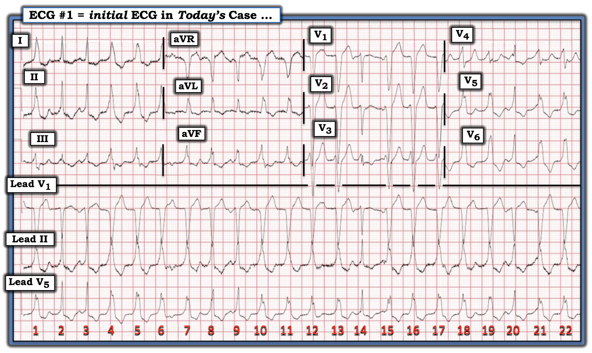
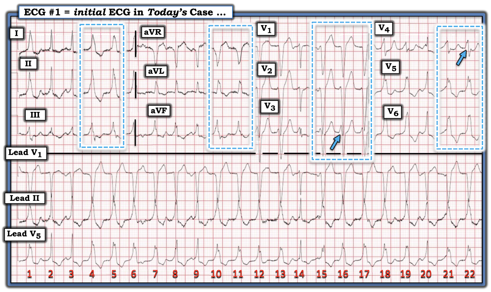
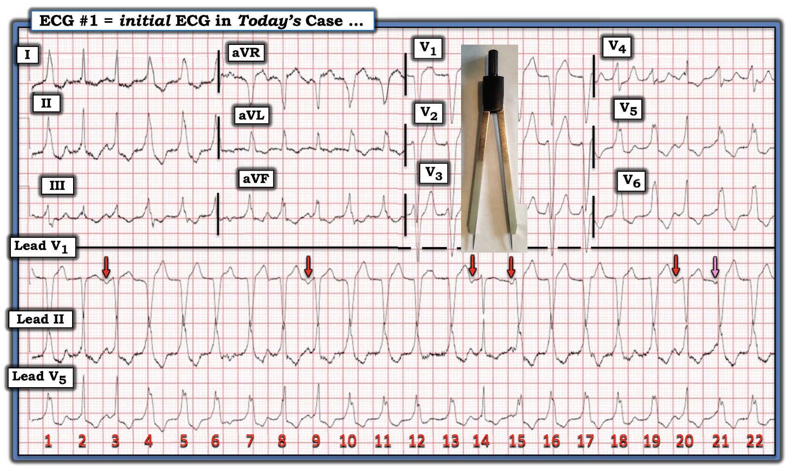
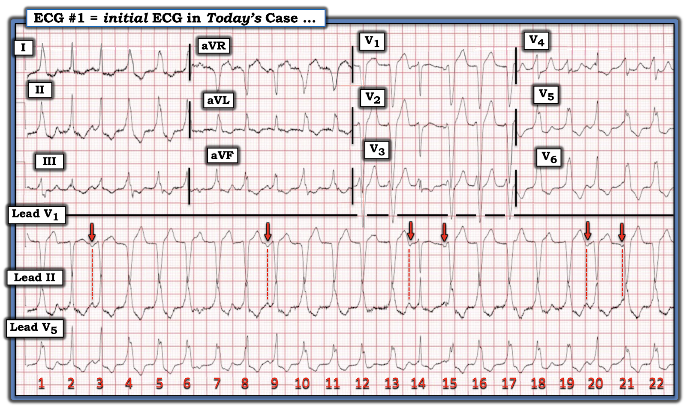
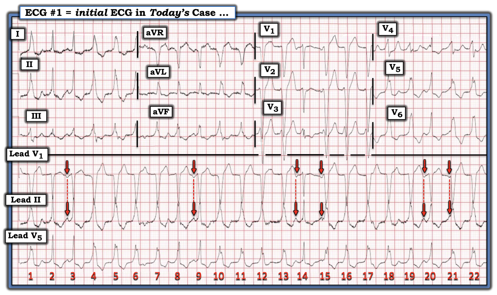
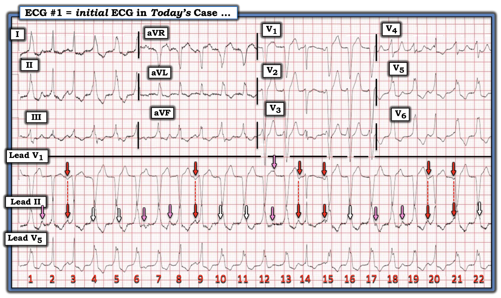
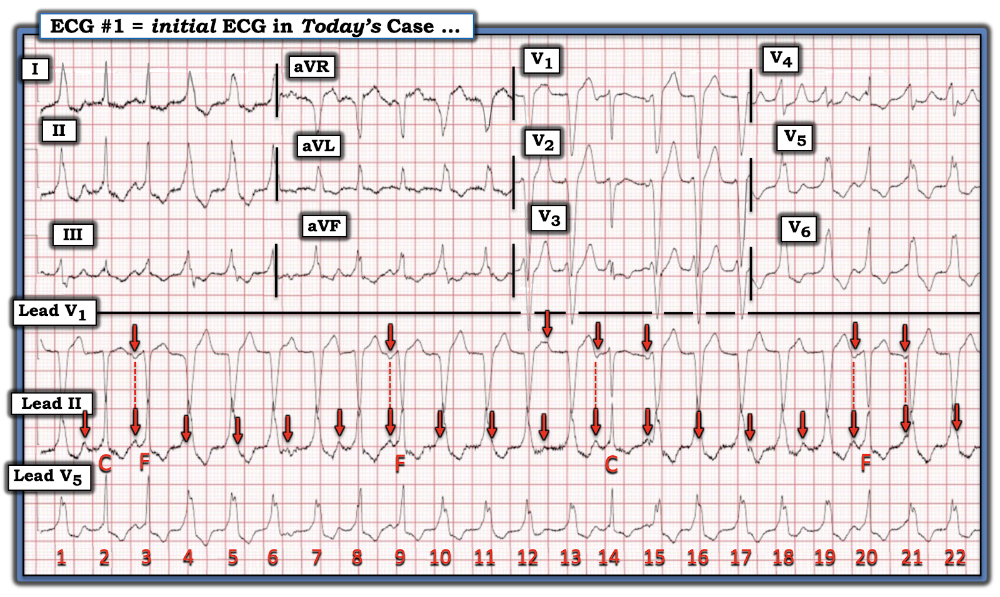

ECG Blog #495 — Chuyện gì đang xảy ra?
Điện tâm đồ ở Hình-1 được ghi từ một phụ nữ trung niên — đến ED (khoa cấp cứu — Emergency Department) vì hồi hộp đánh trống ngực. Bệnh nhân ổn định huyết động vào thời điểm ghi điện tâm đồ #1. Bệnh nhân đã được bắt đầu dùng propafenone vài ngày trước đó.
CÂU HỎI: Nhịp tim là gì?
- — a) Nhịp xoang với dẫn truyền lệch hướng kiểu LBBB từng lúc.
- — b) Nhịp xoang với dẫn truyền lệch hướng kiểu RBBB từng lúc.
- — c) Nhịp xoang với các loạt NSVT.
- — d) Rung nhĩ với các nhát dẫn truyền lệch hướng.
- — e) Rung nhĩ với rất nhiều PVC.


Cách tiếp cận CỦA TÔI với nhịp ở Hình-1:
Đây là một bản ghi khó. “Tin tốt” — là bệnh nhân này ổn định huyết động — nghĩa là bạn có chút thời gian để cân nhắc câu trả lời.
- ĐIỂM THEN CHỐT (PEARL) #1: Khi đối mặt với một rối loạn nhịp phức tạp, trong đó bản ghi có nhiều hơn một thành phần — tôi tìm trước tiên xem có một nhịp nền hay không. Nhìn vào 3 dải nhịp chuyển đạo dài ghi đồng thời ở Hình-1 — chúng ta thấy rối loạn nhịp này có những nhát rộng hơn và những nhát hẹp.
Hãy NHÌN vào Hình-2 — trong đó tôi đã khoanh lại một số nhát rộng hơn ở mỗi chuyển đạo trong 12 chuyển đạo (trong các hình chữ nhật nét chấm màu XANH).
CÂU HỎI:
- Bạn sẽ mô tả hình dạng QRS của các nhát rộng hơn như thế nào?


Hình dạng QRS của các nhát rộng hơn:
Nhìn vào các phức bộ QRS trong các hình chữ nhật nét chấm màu XANH — các nhát rộng hơn ở Hình-2 dường như biểu hiện dẫn truyền kiểu LBBB (blốc nhánh trái — Left Bundle Branch Block):
- QRS của các nhát rộng hơn ở các chuyển đạo bên trái I, aVL và V6 — đều biểu hiện sóng R một pha.
- Các chuyển đạo phía trước V1,V2,V3 — biểu hiện QRS âm là chủ yếu (Xem ECG Blog #293 — để ôn lại hình dạng QRS dự kiến khi dẫn truyền kiểu RBBB và LBBB).
ĐIỂM THEN CHỐT (PEARL) #2
(Vượt ra ngoài phần cốt lõi): Mặc dù các nhát rộng hơn mà chúng ta thấy ở Hình-2 rõ ràng giống dẫn truyền kiểu LBBB — các mũi tên XANH làm nổi bật một đặc điểm hơi không điển hình.
- Phần lớn các trường hợp dẫn truyền kiểu LBBB — sự chuyển sang QRS dương ưu thế xảy ra muộn hơn một chút so với những gì thấy ở Hình-2. Ngay cả khi tính đến khả năng sóng P ẩn chồng lên phần đầu QRS ở chuyển đạo V3 — chúng ta thường không thấy sóng R khởi đầu rộng như vậy với LBBB như ở chuyển đạo V3 — cũng không thấy QRS đã dương ưu thế ngay từ chuyển đạo V4 (mũi tên Xanh ở chuyển đạo này).
- Xin nhấn mạnh: Việc phân biệt hình dạng QRS của VT (nhịp nhanh thất — Ventricular Tachycardia) — với hình dạng QRS của một nhịp trên thất kèm dẫn truyền lệch hướng, thường không rạch ròi. Điểm nâng cao mà tôi muốn nhấn mạnh ở đây — là mặc dù hình dạng QRS của các nhát rộng hơn ở Hình-2 có thể phù hợp với dẫn truyền lệch hướng kiểu LBBB — tôi vẫn chưa bị thuyết phục.
===============================
Có nhịp nền hay không?
Bản ghi hôm nay có sóng P.
- Ban đầu tôi giới hạn việc tìm hoạt động nhĩ ở những sóng P mà tôi chắc chắn. Biết rằng chuyển đạo II và V1 thường là những chuyển đạo tốt nhất để phát hiện sóng P — tôi bắt đầu tìm hoạt động nhĩ ở chuyển đạo V1 (các mũi tên ĐỎ ở Hình-3).
- LƯU Ý: Mũi tên màu cuối cùng ở Hình-3 có màu HỒNG — vì ban đầu tôi không chắc rằng sóng lệch âm ngắn thấy ngay trước QRS của nhát #21 có phải là sóng P hay không.
- ĐIỂM THEN CHỐT (PEARL) #3: Xin nhấn mạnh rằng tôi không khuyến khích dùng compa đo khi bệnh nhân trước mặt bạn đang "suy sụp nhanh" — bệnh nhân hôm nay ổn định huyết động vào thời điểm ghi bản ghi này. Khi bạn có chút thời gian — dùng compa đo giúp phát hiện sóng P nhanh hơn.
- Đặt compa đo theo khoảng P-P gợi ý bởi 2 sóng lệch âm mà chúng ta thấy rõ ở chuyển đạo V1 trước các nhát #14 và 15 — cho phép xác nhận rằng sóng P ở mũi tên HỒNG trước nhát #21 (có cùng khoảng P-P này) — chắc chắn cũng là một sóng P.


Sử dụng các chuyển đạo khác:
"Cái hay" của việc có nhiều dải nhịp chuyển đạo dài ghi đồng thời — là cho phép chúng ta tăng cường đánh giá bằng cách dùng nhiều hơn một chuyển đạo. Trong khi chuyển đạo V5 bên trái ít giúp ích cho việc tìm hoạt động nhĩ — thì chuyển đạo II hỗ trợ vô cùng quý giá!
- Hãy chú ý ở Hình-4 cách các đường thời gian nét chấm màu ĐỎ tương ứng chính xác các sóng lệch dương nhọn ở chuyển đạo II — với các sóng P âm ở mũi tên ĐỎ trong chuyển đạo V1.


===============================
Bây giờ hãy NHÌN vào Hình-5 — minh họa cách chúng ta có thể qua lại giữa chuyển đạo V1 và II ghi đồng thời— đôi khi thấy hoạt động nhĩ rõ hơn ở chuyển đạo này — và đôi khi thấy hoạt động nhĩ rõ hơn ở chuyển đạo kia.
CÂU HỎI:
- Bạn có thấy dấu hiệu của sóng P nhiều hơn ở chuyển đạo II so với những sóng P chúng tôi đánh dấu bằng mũi tên ĐỎ ở Hình-5 không?


===============================
TRẢ LỜI: Thêm các sóng P ở chuyển đạo II ...
Ở Hình-6 — tôi đã thêm các mũi tên màu để làm nổi bật sự hiện diện của một nhịp nhĩ nền khá đều suốt toàn bộ dải nhịp chuyển đạo dài.
- Các mũi tên ĐỎ ở Hình-6 chỉ những sóng P xoang mà chúng ta nhận ra dễ nhất nhờ các sóng P âm rõ nét thấy ở chuyển đạo V1.
- Dùng khoảng P-P đã xác định trước đó ở Hình-3 bằng khoảng cách giữa 2 sóng P liên tiếp ở mũi tên ĐỎ mà chúng ta chắc chắn thấy trước các nhát #14 và 15 — các mũi tên HỒNG ở Hình-6 tương ứng với các sóng P xoang tạo khía "đúng lúc" trên đường nền chuyển đạo II.
- Dù không thấy được ở Hình-6 — các mũi tên TRẮNG đánh dấu những vị trí mà các sóng P xoang "đúng lúc" khác gần như chắc chắn đang ẩn.
- ĐIỀU CỐT LÕI: Điện tâm đồ hôm nay dường như có một nhịp nền gồm các sóng P xoang khá đều. Với khoảng PR luôn thay đổi giữa các sóng P xoang này và các phức bộ QRS rộng kế cận — điều này xác lập sự hiện diện của phân ly nhĩ thất (AV Dissociation)!


===============================
ĐIỂM THEN CHỐT (PEARL) #4: Tôi đã điểm lại rất nhiều ca nhịp nhanh QRS rộng (WCT — Wide-Complex Tachycardia) đều trong ECG Blog này (Xem các ĐƯỜNG LINK bên dưới tới nhiều ca trong số đó). Qua đó — tôi đã điểm lại những tiêu chuẩn điện tâm đồ mà tôi thấy hữu ích nhất để phân biệt nhịp SVT với VT.
- Nếu bạn xác lập được sự hiện diện của phân ly nhĩ thất thật sự trong một nhịp WCT đều — điều này về cơ bản khẳng định nhịp đó là VT (nhịp nhanh thất — Ventricular Tachycardia).
- Như đã nhấn mạnh trong ECG Blog #468 — Phần lớn các trường hợp, phân ly nhĩ thất sẽ không thấy được trừ khi tần số VT tương đối chậm. Nghĩa là dấu hiệu phân ly nhĩ thất trên điện tâm đồ hiếm khi giúp phân biệt các nhịp VT nhanh hơn với các nhịp SVT có blốc nhánh sẵn có hoặc dẫn truyền lệch hướng (và chính các nhịp VT nhanh hơn mới là khó nhận ra nhất). Tần số của các nhát rộng trong nhịp hôm nay là ~135/phút.
- Nhiều người "nghĩ" rằng họ thấy phân ly nhĩ thất trong khi thực tế không có. Trừ khi bạn có thể "dò bước" được các sóng P nền đều qua phần lớn (gần hết) bản ghi — khó có khả năng có phân ly nhĩ thất (Xem ECG Blog #133 — và — ECG Blog #151 để xem các ví dụ phân ly nhĩ thất thật sự trong VT).
- Mặc dù các sóng P ở mũi tên TRẮNG trong Hình-6 bị che khuất (vì chúng rơi vào trong phức bộ QRS của các nhát #4,5; 10,11; 16 và 22) — vẫn có đủ sóng P xoang "đúng lúc" trong nhịp hôm nay để xác lập rằng có phân ly nhĩ thất thật sự.
ĐIỂM THEN CHỐT (PEARL) #5: Có giá trị chẩn đoán tương tự khi đánh giá các nhịp WCT đều — là việc phát hiện nhát hỗn hợp ("F") và/hoặc nhát bắt được ("C" ).
- Nhát hỗn hợp (fusion) — có thể thấy khi một hoặc nhiều xung động trên thất xảy ra cùng lúc với các nhát thất. Kết quả là một phức bộ QRS có hình dạng trung gian, trông giống phức bộ trên thất hoặc phức bộ thất nhiều hơn, tùy thuộc xung động dẫn truyền từ xoang xuyên được bao xa vào tâm thất trước khi gặp nhát thất (Xem ECG Blog #128 để xem giải thích có minh họa cho khái niệm này).
- Nhát bắt được (capture) — xảy ra khi một nhát dẫn truyền bình thường (QRS hẹp) xuất hiện giữa một nhịp WCT (chẳng hạn VT). Điều này có thể xảy ra nếu một nhát dẫn truyền từ xoang đến đúng thời điểm, sao cho dẫn truyền bình thường không bị nhịp VT ngăn cản.
Một hình ảnh đáng giá 1,000 lời nói ...
Hãy NHÌN vào Hình-7.
- Các mũi tên ĐỎ ở Hình-7 đánh dấu nhịp sóng P xoang nền tiếp diễn "đúng lúc" suốt các dải nhịp chuyển đạo dài.
- Các nhát #2 và 14 là nhát bắt được ("C" ). Lưu ý rằng phức bộ QRS của các nhát này hẹp hơn các phức bộ QRS khác trong bản ghi. Nhát #14 đi sau một sóng P ở mũi tên ĐỎ với khoảng PR bình thường (do đó hợp lý khi cho rằng thời điểm của sóng P này có thể tình cờ thuận lợi để được dẫn truyền bình thường qua tâm thất mà không có hỗn hợp). Tôi kém chắc chắn hơn về nhát #2, vì khoảng PR của nó dài hơn một chút (tức là, có lẽ cũng có một mức độ hỗn hợp bên cạnh bắt được?).
- Các nhát #3; 9 và 20 là nhát hỗn hợp ("F") — mỗi nhát biểu hiện một mức độ hỗn hợp khác nhau, tùy thuộc sóng P đi trước rơi vào vị trí nào trong chu kỳ. Ví dụ — khoảng PR ngắn hơn trước nhát #20 dẫn đến ít hỗn hợp hơn, và QRS giống các nhát thất hơn.
- ĐIỀU CỐT LÕI: Sự hiện diện của phân ly nhĩ thất, đặc biệt khi có gợi ý các nhát hỗn hợp và bắt được trong nhịp QRS rộng này — chứng minh rằng các nhát rộng có nguồn gốc thất (nên đáp án đúng cho câu hỏi ban đầu hôm nay là nhịp xoang với các loạt NSVT).
===============================
ĐIỂM THEN CHỐT (PEARL) #6 (
tôi bổ sung sau khi đăng bài này): Nhiều độc giả của Blog khi xem bản ghi hôm nay đã nghĩ đến các loạt AVRT ở một bệnh nhân có WPW.
- Điều quan trọng cần nhớ là trát đậm phần đầu QRS mà chúng ta thấy ở Hình-7 (đặc biệt ở các dải nhịp chuyển đạo II và V5 dài) có thể gặp ở các nhát thất (tức là, trát đậm này không phải sóng delta).
- Lưu ý rằng hình dạng QRS này vẫn không thay đổi ở các nhát #16,17,18 mặc dù khoảng PR của các nhát này dài (thấy rõ nhất ở dải nhịp chuyển đạo II dài).
- Thay vào đó — các nhát hẹp hơn mà chúng ta thấy trên bản ghi này chính là các nhát bắt được ( = các nhát #2,14) hoặc nhát hỗn hợp ( = các nhát #3,9,20) — điều này hợp lý khi có các loạt NSVT từng lúc.


Bệnh nhân hôm nay đã được bắt đầu dùng Propafenone ...
Propafenone là thuốc chống loạn nhịp nhóm 1C (Type 1C) — có chỉ định điều trị AFib, các nhịp SVT vào lại (kể cả các nhịp có đường phụ), và các nhịp thất (Kim và cs. — Acta Cardiol Sin 37:100-103, 2021 — và — Do — Cardiovasc Prev Pharmacother 5(1):1-14, 2023).
- Bệnh nhân trong ca hôm nay được bắt đầu dùng Propafenone vài ngày trước khi đến ED, có lẽ vì PVC thường xuyên gây triệu chứng hồi hộp đánh trống ngực nặng.
- Mối lo ngại khi dùng Propafenone — là nguy cơ gây loạn nhịp (proarrhythmia), trong đó việc dùng một thuốc để điều trị loạn nhịp lại nghịch lý làm nặng thêm rối loạn nhịp ban đầu.
- Nguy cơ gây loạn nhịp tăng đáng kể ở bệnh nhân có bệnh tim thiếu máu cục bộ hoặc bệnh tim cấu trúc nền (dù bệnh nhân hôm nay trước đó vẫn khỏe mạnh).
- Các biểu hiện có thể có của tác dụng gây loạn nhịp do Propafenone bao gồm: i) Làm nặng thêm chính rối loạn nhịp đang được điều trị; ii) Thay đổi đặc tính dẫn truyền của tim (bao gồm kéo dài khoảng PR và có thể làm QRS giãn rộng rõ rệt) — iii) Làm chậm tần số cuồng nhĩ (AFlutter) — có thể cho phép dẫn truyền AV 1:1 với tần số thất tăng nhanh; iv) Khởi phát VT/VFib/xoắn đỉnh (Torsades de Pointes); và, v) Bộc lộ hội chứng Brugada (do tác dụng chẹn kênh natri của thuốc).
- ĐIỂM THEN CHỐT (PEARL) #7: Các biến cố gây loạn nhịp ở bệnh nhân dùng Propafenone thường xảy ra nhất trong tuần thứ 1 điều trị — đó chính xác là thời điểm ghi điện tâm đồ hôm nay!
==================================
Lời cảm ơn: Xin cảm ơn Mubarak Al-Hatemi (từ Qatar) đã cho phép tôi sử dụng ca bệnh và các bản ghi này.
==================================

==============================
Các bài ECG Blog liên quan bổ sung cho ca hôm nay:
- ECG Blog #185 — Điểm lại Hệ thống Đọc nhịp của tôi, dùng Cách tiếp cận Ps, Qs, 3R.
- ECG Blog #210 — Điểm lại phương pháp Cách-Một-Nhát (hoặc Cứ-Mỗi-Ba-Nhát) để ước tính tần số tim nhanh — và bàn về một ca khác của nhịp WCT đều.
- ECG Blog #220 — Điểm lại cách tiếp cận WCT đều (nhịp nhanh QRS rộng — Wide-Complex Tachycardia).
- ECG Blog #489 — trong đó điện tâm đồ ban đầu trông giống điện tâm đồ của ca hôm nay (nhưng đáp án lại khác).
- ECG Blog #196 — Điểm lại một WCT đều khác.
- ECG Blog #263 và Blog #283 — Blog #361 — Blog #384 — và Blog #460 — và Blog #468 — và Blog #491 — Thêm các nhịp WCT ...
- ECG Blog #197 — Điểm lại khái niệm VT vô căn, trong đó VT phân nhánh là một trong 2 loại thường gặp nhất.
- ECG Blog #346 — Điểm lại một ca VT đường ra thất trái (LVOT VT) (một thể VT vô căn ít gặp hơn).
- ECG Blog #204 — Điểm lại chẩn đoán điện tâm đồ các blốc nhánh (RBBB/LBBB/IVCD).
- ECG Blog #203 — Điểm lại chẩn đoán điện tâm đồ về trục và các blốc phân nhánh. Để ôn lại hình dạng QRS trong các blốc hai phân nhánh (RBBB/LAHB; RBBB/LPHB) — Xem Video Pearl trong bài này.
- ECG Blog #211 — TẠI SAO lại xảy ra dẫn truyền lệch hướng?
- ECG Blog #301 — Điểm lại một WCT có nguồn gốc trên thất! (với RẤT NHIỀU dẫn truyền lệch hướng).
- ECG Blog #445 và Blog #361 — thêm các WCT đều.
- ECG Blog #475 — SVT dẫn truyền lệch hướng?
- ECG Blog #323 — Điểm lại VT phân nhánh.
- ECG Blog #38 và Blog #85 — Điểm lại VT phân nhánh.
- ECG Blog #278 — Một ca khác của nhịp WCT đều ở một người trưởng thành trẻ tuổi hơn.
- ECG Blog #35 — Điểm lại VT đường ra thất phải (RVOT).
- ECG Blog #42 — Các tiêu chuẩn phân biệt VT với dẫn truyền lệch hướng.
- ECG Blog #133 và ECG Blog #151— các ví dụ trong đó phân ly nhĩ thất khẳng định chẩn đoán VT.
- Phân tích một ca nhịp WCT đều ở một phụ nữ ngoài 80 tuổi — Xem Bình luận của tôi trong bài ngày 5 tháng Năm năm 2020 trên Dr. Smith’s ECG Blog.
- Một ca khác của nhịp WCT đều ở một phụ nữ ngoài 60 tuổi — Xem Bình luận của tôi ở cuối trang trong bài ngày 15 tháng Tư năm 2020 trên Dr. Smith’s ECG Blog.
- Một loạt 3 bản ghi khó có QRS giãn rộng (Xem Bình luận của tôi ở cuối trang trong bài ngày 6 tháng Ba năm 2025 trên Dr. Smith's ECG Blog).
- Điểm lại các VT vô căn (tức là, VT phân nhánh; RVOT VT và LVOT VT) — Xem Bình luận của tôi ở cuối trang trong bài ngày 7 tháng Chín năm 2020 trên Dr. Smith’s ECG Blog.
- Điểm lại một loại VT khác (VT đa hình thái (Pleomorphic VT)) — Xem Bình luận của tôi trong bài ngày 1 tháng Sáu năm 2020 trên Dr. Smith’s ECG Blog.